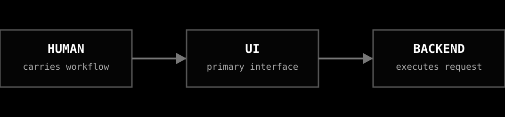
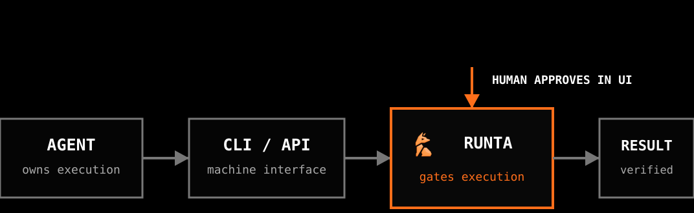
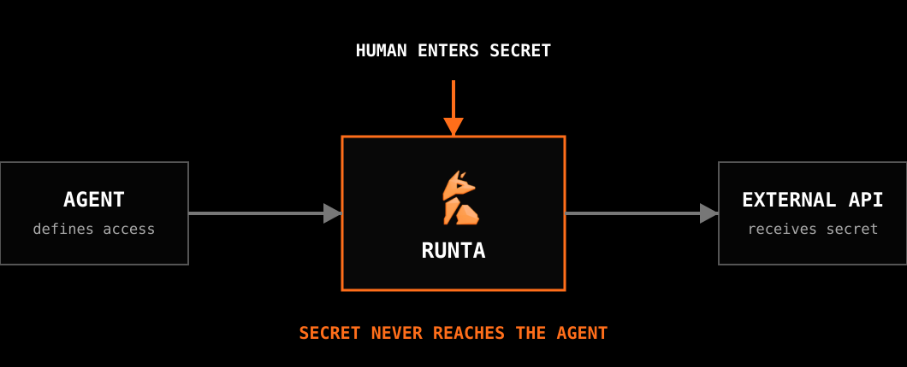

The API Key in the Chat
Today's agents can execute commands and operate tools. Yet the user still creates accounts, finds settings pages, copies keys, and returns to chat to say “done.”
The limitation is no longer agent execution. Human-native products still make the user the integration layer.
At Runta, I started from a simple premise: remove that handoff. The agent should keep running until it reaches a decision only the user can make.
That premise shaped device login, secret authorization, and onboarding:
- The agent executes.
- The human authorizes.
- Runta enforces the boundary.
What Agent-Native Actually Means
Human-native software routes work through a person-driven UI.
聊天框里的 API Key
今天的 Agent 已经能执行命令和调用工具。但注册账号、寻找设置页、复制 key，以及回到聊天框回复「好了」，仍然要靠用户完成。
瓶颈已经不在 Agent 的执行能力，而在于人类原生的产品仍然让用户充当集成层。
在 Runta，我是从一个简单前提开始的：去掉这层人工接力。Agent 应该持续执行，直到遇到一个只能由用户决定的节点。
这套分工贯穿 device login、secret authorization 和 onboarding：
- Agent 执行。
- 人类授权。
- Runta 强制执行边界。
Agent 原生到底是什么
人类原生的软件通过人来驾驶 UI。

Agent-native software moves execution to machine interfaces. The agent stays on the main path. When a step needs a credential or approval, Runta opens a UI for the human, then returns control to the agent.
Agent 原生软件则把执行交给机器接口，Agent 始终在主路径上。遇到需要 credential 或 approval 的节点时，Runta 为用户打开 UI；用户完成操作后，控制权回到 Agent。

Identity Without Credential Copy-Paste
I started with runta login.
The old flow sent the user to the Runta dashboard to find the settings page, create an API key, copy it into a terminal, run export RUNTA_TOKEN=..., and only then use the CLI. The user carried state between the product and the agent, while a long-lived credential passed through both the clipboard and agent context. It was the opposite of agent-native.
The agent runs runta login. The CLI creates a short-lived request, opens a trusted Runta page, and polls. The user approves or denies it. On approval, Runta performs a one-time exchange and the CLI stores the credential with owner-only permissions. It never prints the credential.
不复制 Credential 的身份授权
我先从 runta login 开始落地。
旧流程要求用户打开 Runta Dashboard，找到设置页，创建 API key，把它复制到终端，执行 export RUNTA_TOKEN=...，然后才能使用 CLI。用户负责在产品与 Agent 之间搬运状态，长期 credential 也同时经过剪贴板和 Agent 上下文。这恰恰是最不 Agent-native 的流程。
Agent 执行 runta login。CLI 创建短期请求，打开可信的 Runta 页面并持续轮询。用户批准或拒绝。批准后，Runta 完成一次性交换，CLI 以仅文件所有者可读的权限保存 credential，并且从不打印它。
Capabilities, Not Credentials
External APIs exposed the harder problem. A key in an environment variable or .env file is still visible to an agent with shell access. “Do not print the key” is a prompt instruction, not a security boundary.
For Runta secret authorization, the agent defines the secret's intended use and opens an approval page containing only that metadata. The user reviews the scope and enters the value directly into Runta. The credential never returns to the CLI or agent.
The agent waits on structured status and resumes when the user finishes. The human makes the decision; the system carries the state. A secret store answers where a key is. A capability defines what a workload may do.
Capability，而不是 Credential
外部 API 暴露了更难的问题。只要 Agent 拥有 shell，把 key 放进环境变量或 .env 文件就仍然对它可见。「不要输出 key」只是一条提示词，不是安全边界。
在 Runta secret authorization 中，Agent 定义 secret 的用途，并打开只包含这些元数据的审批页。用户检查范围，直接在 Runta 中填写真实值。Credential 永远不会返回 CLI 或 Agent。
Agent 等待结构化状态，并在用户完成操作后继续。人类负责决定，系统负责传递状态。Secret store 解决 key 放在哪里；capability 限制 workload 能做什么。

The agent invokes tools, waits on state, retries, verifies readiness, and carries the task to completion. The human sets the goal and approves changes in authority.
Runta turns those decisions into enforced capabilities without exposing credentials or making the user carry workflow state.
At Runta, I led this model from premise to implementation:
Agents execute. Humans authorize. Runta enforces.
Agent 调用工具、等待状态、重试、验证 readiness，并把任务推进到完成。人类设定目标，并批准权限变化。
Runta 把这些决定变成系统实际执行的 capability，同时避免 credential 暴露，也不让用户负责传递工作流状态。
这套模型最终由我在 Runta 主导落地：
Agent 执行。人类授权。Runta 强制执行。